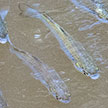

|
|
|
|
|
|
| 2-12cm,
to 70cm. Body dark greyish brown, lips swollen, tail fin transparent
and rounded. Mimicks drifting leaves. Seagrasses and coral rubble.
Sometimes seen on many of our shores. |
4-10cm,
to 15cm. Head has no spines, fringed flaps over nostrils. It belongs
to the Family Serranidae which
includes groupers. It is NOT a scorpionfish. Coral rubble. Commonly
seen on some of our shores. |
15cm,
to 20cm. The first few dorsal spines are elongated. Among seagrasses.
Seen once on Cyrene Reef. |
15cm, to 50cm. Large scales in distinctive diamond pattern, a red
margin around gill covers and red mark at the base of the pectoral
fins. Seagrasses. Sometimes seen on some of our shores. |
15cm, to 70cm. Large scales in distinctive diamond pattern, brown
blotches and bars, fine blue lines on forehead. Seagrasses, reefs.
Sometimes seen on some of our shores. |
|
|
|
|
|
|
| 8-15cm.
Body generally olive with spots. Sometimes with a dark round blotch
behind the gill cover. Seagrasses. Commonly seen on our Northern shores. |
15-20cm,
to 40cm. Spotted pattern, large golden spot below dorsal fin near
the tail. Among coral rubble. Sometimes seen on our Northern shores. |
10-20cm,
to 40cm. Many small white spots on upper body and fine lines on lower
body. Among coral rubble, near seagrasses. Sometimes seen on our Northern
shores. |
|
|
|
|
|
|
|
|
| 17-22cm.
4-5 broad black bars across a yellowish body. Tail fins with pointed
tips resembling scissors with black horizontal stripes.. Sometimes
seen near reefs. |
To
14cm. 6-7 narrow bars black (sometimes grey) across a yellowish body.
Tail with rounded lobes, no horizontal black stripes. Coral rubble
near reefs. |
About
8cm, to 23cm. With 6 dark bars, black spot at base of tail. Near reefs.
Seen once on Sisters Island. |
4-6cm,
to 11cm. With 4 thick yellow bars and 5 thick black bars across the
body. Often bluish at night. Near living reefs. Commonly seen on our
Southern shores. |
|
|
|
|
|
|
| 12-15cm, to 20cm. Juvenile with electric blue stripes on nose and
ringed dark spot on dorsal fin and base of tail. Commonly seen on
our reefs. |
12-15cm, to 20cm. Juvenile with electric blue stripes on nose and
ringed dark spot on dorsal fin and base of tail. Commonly seen on
our reefs. |
12-15cm, to 20cm. Adult dark grey with a black spot on the upper tail
base. Coral rubble. Sometimes seen on our Northern shores. |
|
|
|
|
|
|
|
| 20cm,
to 90cm. Black spot middle of dorsal fin base, juveniles with while
saddle spot after the black spot. Seen once on Sentosa. |
38cm.
Variable coloration, with a pale diagonal bar at the pectoral fin,
black area on the middle of the upper side and large white saddle
behind the dorsal fin. Sometimes seen on reefy Southern shores.. |
28cm.
Bluish stripes on lower sides, NO black spot on dorsal fin. Seen at Cyrene Reef.. |
|
|
|
|
|
|
|
| Adult 95cm, juveniles much smaller. Adult brown with darker bars and
small orange spots on the sides. Among seagrasses. Sometimes seen
on our Northern shores. |
35cm.
Less dense spotting, larger polygonal spots, thin or no white margin
on the tail. Seen at Tanah Merah. |
10-15cm,
grows to 20-30cm. A dark spot on the upper edge of the gill cover.
Coral rubble Sometimes seen on some of our Northern shores. |
To 30cm. Many fine blue lines on the head, body. All fins blue. Near seawalls on some of our shores. |
20-30cm.
Greyish green 6 to 8 dark bars, dark spot at pectoral fins, pearly
scales. Mangroves. Common in our northern mangroves. An introduced
species, not native. |

Mullet
Family Mugilidae |
|
|
|
|
About
10cm. Body cylindrical with broad flat head. Two dorsal fins far
apart. Silvery with stripes and spots. Often seen in schools at
high tide from jetties and boardwalks. |
Up
to 1m. Various kinds seen on our Southern shores. |
|
|
|